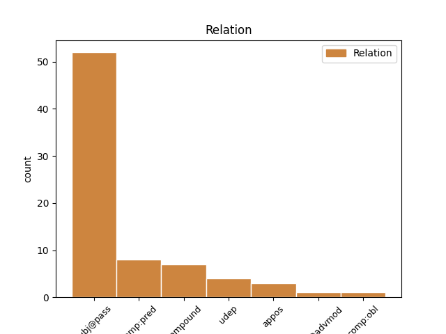

Distribution of features within this leaf

Agreement Rules sorted by frequency.
- When the dependent token is the subject(subj@pass) of the head token, and the head token is VERB and the dependent token is NUM.
1 alioquin _ _ _ _ 0 _ _ _
2 ex _ _ _ _ 0 _ _ _
3 materia _ _ _ _ 0 _ _ _
4 et _ _ _ _ 0 _ _ _
5 forma _ _ _ _ 0 _ _ _
6 non _ _ _ _ 0 _ _ _
7 fieret facio VERB N3|modK|tem2|gen6 Aspect=Imp|Mood=Sub|Number=Sing|Person=3|Tense=Imp|VerbForm=Fin|Voice=Pass 0 _ _ _
8 unum unus NUM F1|grn1|casA|gen3 Case=Nom|Degree=Pos|Gender=Neut|Number=Sing|NumType=Card 7 subj@pass _ _
9 substantialiter _ _ _ _ 0 _ _ _
10 , _ _ _ _ 0 _ _ _
11 sed _ _ _ _ 0 _ _ _
12 accidentaliter _ _ _ _ 0 _ _ _
13 . _ _ _ _ 0 _ _ _
1 subiectum _ _ _ _ 0 _ _ _
2 autem _ _ _ _ 0 _ _ _
3 privationis _ _ _ _ 0 _ _ _
4 et _ _ _ _ 0 _ _ _
5 formae _ _ _ _ 0 _ _ _
6 est sum VERB N3|modA|tem1|gen6 Mood=Ind|Number=Sing|Person=3|Tense=Pres|VerbForm=Fin|Voice=Act 0 _ _ _
7 unum unus NUM F1|grn1|casA|gen3 Case=Nom|Degree=Pos|Gender=Neut|Number=Sing|NumType=Card 6 comp:pred _ _
8 et _ _ _ _ 0 _ _ _
9 idem _ _ _ _ 0 _ _ _
10 , _ _ _ _ 0 _ _ _
11 scilicet _ _ _ _ 0 _ _ _
12 ens _ _ _ _ 0 _ _ _
13 in _ _ _ _ 0 _ _ _
14 potentia _ _ _ _ 0 _ _ _
15 , _ _ _ _ 0 _ _ _
16 sive _ _ _ _ 0 _ _ _
17 sit _ _ _ _ 0 _ _ _
18 ens _ _ _ _ 0 _ _ _
19 in _ _ _ _ 0 _ _ _
20 potentia _ _ _ _ 0 _ _ _
21 simpliciter _ _ _ _ 0 _ _ _
22 , _ _ _ _ 0 _ _ _
23 sicut _ _ _ _ 0 _ _ _
24 materia _ _ _ _ 0 _ _ _
25 prima _ _ _ _ 0 _ _ _
26 , _ _ _ _ 0 _ _ _
27 quae _ _ _ _ 0 _ _ _
28 est _ _ _ _ 0 _ _ _
29 subiectum _ _ _ _ 0 _ _ _
30 formae _ _ _ _ 0 _ _ _
31 substantialis _ _ _ _ 0 _ _ _
32 et _ _ _ _ 0 _ _ _
33 privationis _ _ _ _ 0 _ _ _
34 oppositae _ _ _ _ 0 _ _ _
35 ; _ _ _ _ 0 _ _ _
36 sive _ _ _ _ 0 _ _ _
37 sit _ _ _ _ 0 _ _ _
38 ens _ _ _ _ 0 _ _ _
39 in _ _ _ _ 0 _ _ _
40 potentia _ _ _ _ 0 _ _ _
41 secundum _ _ _ _ 0 _ _ _
42 quid _ _ _ _ 0 _ _ _
43 et _ _ _ _ 0 _ _ _
44 in _ _ _ _ 0 _ _ _
45 actu _ _ _ _ 0 _ _ _
46 simpliciter _ _ _ _ 0 _ _ _
47 , _ _ _ _ 0 _ _ _
48 ut _ _ _ _ 0 _ _ _
49 corpus _ _ _ _ 0 _ _ _
50 diaphanum _ _ _ _ 0 _ _ _
51 , _ _ _ _ 0 _ _ _
52 quod _ _ _ _ 0 _ _ _
53 est _ _ _ _ 0 _ _ _
54 subiectum _ _ _ _ 0 _ _ _
55 tenebrarum _ _ _ _ 0 _ _ _
56 et _ _ _ _ 0 _ _ _
57 lucis _ _ _ _ 0 _ _ _
58 . _ _ _ _ 0 _ _ _
1 ad _ _ _ _ 0 _ _ _
2 primum _ _ _ _ 0 _ _ _
3 ergo _ _ _ _ 0 _ _ _
4 dicendum _ _ _ _ 0 _ _ _
5 quod _ _ _ _ 0 _ _ _
6 agens _ _ _ _ 0 _ _ _
7 per _ _ _ _ 0 _ _ _
8 naturam _ _ _ _ 0 _ _ _
9 agit _ _ _ _ 0 _ _ _
10 per _ _ _ _ 0 _ _ _
11 formam _ _ _ _ 0 _ _ _
12 per _ _ _ _ 0 _ _ _
13 quam _ _ _ _ 0 _ _ _
14 est _ _ _ _ 0 _ _ _
15 , _ _ _ _ 0 _ _ _
16 quae _ _ _ _ 0 _ _ _
17 unius unus NUM F1|grn1|casB|gen3|vgr2 Case=Gen|Degree=Pos|Gender=Neut|Number=Sing|NumType=Card 20 compound _ _
18 tantum _ _ _ _ 0 _ _ _
19 est _ _ _ _ 0 _ _ _
20 una unus NUM F1|grn1|casA|gen2 Case=Nom|Degree=Pos|Gender=Fem|Number=Sing|NumType=Card 0 _ _ _
21 , _ _ _ _ 0 _ _ _
22 et _ _ _ _ 0 _ _ _
23 ideo _ _ _ _ 0 _ _ _
24 non _ _ _ _ 0 _ _ _
25 agit _ _ _ _ 0 _ _ _
26 nisi _ _ _ _ 0 _ _ _
27 unum _ _ _ _ 0 _ _ _
28 . _ _ _ _ 0 _ _ _
1 unde _ _ _ _ 0 _ _ _
2 quod _ _ _ _ 0 _ _ _
3 est _ _ _ _ 0 _ _ _
4 uni unus NUM F1|grn1|casC|gen1 Case=Dat|Degree=Pos|Gender=Masc|Number=Sing|NumType=Card 5 udep _ _
5 venenum venenum NOUN B1|grn1|casA|gen3 Case=Nom|Degree=Pos|Gender=Neut|Number=Sing 0 _ _ _
6 , _ _ _ _ 0 _ _ _
7 est _ _ _ _ 0 _ _ _
8 alteri _ _ _ _ 0 _ _ _
9 cibus _ _ _ _ 0 _ _ _
10 . _ _ _ _ 0 _ _ _
1 si _ _ _ _ 0 _ _ _
2 enim _ _ _ _ 0 _ _ _
3 aliquid _ _ _ _ 0 _ _ _
4 uni unus NUM F1|grn1|casC|gen3 Case=Dat|Degree=Pos|Gender=Neut|Number=Sing|NumType=Card 5 comp:obl _ _
5 deesset desum VERB N3|modB|tem2|gen6 Aspect=Imp|Mood=Sub|Number=Sing|Person=3|Tense=Imp|VerbForm=Fin|Voice=Act 0 _ _ _
6 quod _ _ _ _ 0 _ _ _
7 alterum _ _ _ _ 0 _ _ _
8 haberet _ _ _ _ 0 _ _ _
9 , _ _ _ _ 0 _ _ _
10 neutrum _ _ _ _ 0 _ _ _
11 summum _ _ _ _ 0 _ _ _
12 et _ _ _ _ 0 _ _ _
13 perfectum _ _ _ _ 0 _ _ _
14 esset _ _ _ _ 0 _ _ _
15 . _ _ _ _ 0 _ _ _
1 exhibendo _ _ _ _ 0 _ _ _
2 enim _ _ _ _ 0 _ _ _
3 diversis _ _ _ _ 0 _ _ _
4 rebus _ _ _ _ 0 _ _ _
5 latriae _ _ _ _ 0 _ _ _
6 cultum _ _ _ _ 0 _ _ _
7 , _ _ _ _ 0 _ _ _
8 videtur video VERB K3|modJ|tem1|gen6|vgr1 Mood=Ind|Number=Sing|Person=3|Tense=Pres|VerbForm=Fin|Voice=Pass 0 _ _ _
9 uni unus NUM F1|grn1|casC|gen1 Case=Dat|Degree=Pos|Gender=Masc|Number=Sing|NumType=Card 8 udep _ _
10 summo _ _ _ _ 0 _ _ _
11 deo _ _ _ _ 0 _ _ _
12 latriam _ _ _ _ 0 _ _ _
13 exhibere _ _ _ _ 0 _ _ _
14 , _ _ _ _ 0 _ _ _
15 ad _ _ _ _ 0 _ _ _
16 quem _ _ _ _ 0 _ _ _
17 , _ _ _ _ 0 _ _ _
18 secundum _ _ _ _ 0 _ _ _
19 eorum _ _ _ _ 0 _ _ _
20 positionem _ _ _ _ 0 _ _ _
21 , _ _ _ _ 0 _ _ _
22 diversae _ _ _ _ 0 _ _ _
23 partes _ _ _ _ 0 _ _ _
24 mundi _ _ _ _ 0 _ _ _
25 comparantur _ _ _ _ 0 _ _ _
26 sicut _ _ _ _ 0 _ _ _
27 ad _ _ _ _ 0 _ _ _
28 animam _ _ _ _ 0 _ _ _
29 hominis _ _ _ _ 0 _ _ _
30 diversa _ _ _ _ 0 _ _ _
31 corporis _ _ _ _ 0 _ _ _
32 membra _ _ _ _ 0 _ _ _
33 . _ _ _ _ 0 _ _ _
1 quem _ _ _ _ 0 _ _ _
2 in _ _ _ _ 0 _ _ _
3 nova _ _ _ _ 0 _ _ _
4 lege _ _ _ _ 0 _ _ _
5 secutus _ _ _ _ 0 _ _ _
6 est _ _ _ _ 0 _ _ _
7 nicolaus nicolaus PROPN B1|grn1|casA|gen1 Case=Nom|Degree=Pos|Gender=Masc|Number=Sing 0 _ _ _
8 , _ _ _ _ 0 _ _ _
9 unus unus NUM F1|grn1|casA|gen1 Case=Nom|Degree=Pos|Gender=Masc|Number=Sing|NumType=Card 7 appos _ _
10 ex _ _ _ _ 0 _ _ _
11 septem _ _ _ _ 0 _ _ _
12 diaconibus _ _ _ _ 0 _ _ _
13 . _ _ _ _ 0 _ _ _
1 quia _ _ _ _ 0 _ _ _
2 enim _ _ _ _ 0 _ _ _
3 multa _ _ _ _ 0 _ _ _
4 necessaria _ _ _ _ 0 _ _ _
5 sunt _ _ _ _ 0 _ _ _
6 ad _ _ _ _ 0 _ _ _
7 hominis _ _ _ _ 0 _ _ _
8 vitam _ _ _ _ 0 _ _ _
9 , _ _ _ _ 0 _ _ _
10 ad _ _ _ _ 0 _ _ _
11 quae _ _ _ _ 0 _ _ _
12 unus unus NUM F1|grn1|casA|gen1 Case=Nom|Degree=Pos|Gender=Masc|Number=Sing|NumType=Card 13 mod@advmod _ _
13 homo homo NOUN C1|grn1|casA|gen1 Case=Nom|Degree=Pos|Gender=Masc|Number=Sing 0 _ _ _
14 per _ _ _ _ 0 _ _ _
15 se _ _ _ _ 0 _ _ _
16 sufficere _ _ _ _ 0 _ _ _
17 non _ _ _ _ 0 _ _ _
18 posset _ _ _ _ 0 _ _ _
19 , _ _ _ _ 0 _ _ _
20 necessarium _ _ _ _ 0 _ _ _
21 est _ _ _ _ 0 _ _ _
22 per _ _ _ _ 0 _ _ _
23 diversos _ _ _ _ 0 _ _ _
24 diversa _ _ _ _ 0 _ _ _
25 fieri _ _ _ _ 0 _ _ _
26 : _ _ _ _ 0 _ _ _
27 puta _ _ _ _ 0 _ _ _
28 , _ _ _ _ 0 _ _ _
29 ut _ _ _ _ 0 _ _ _
30 quidam _ _ _ _ 0 _ _ _
31 sint _ _ _ _ 0 _ _ _
32 agricultores _ _ _ _ 0 _ _ _
33 , _ _ _ _ 0 _ _ _
34 quidam _ _ _ _ 0 _ _ _
35 animalium _ _ _ _ 0 _ _ _
36 custodes _ _ _ _ 0 _ _ _
37 , _ _ _ _ 0 _ _ _
38 quidam _ _ _ _ 0 _ _ _
39 aedificatores _ _ _ _ 0 _ _ _
40 , _ _ _ _ 0 _ _ _
41 et _ _ _ _ 0 _ _ _
42 sic _ _ _ _ 0 _ _ _
43 de _ _ _ _ 0 _ _ _
44 aliis _ _ _ _ 0 _ _ _
45 . _ _ _ _ 0 _ _ _
Disagree Examples:
1 secundum _ _ _ _ 0 _ _ _
2 autem _ _ _ _ 0 _ _ _
3 quod _ _ _ _ 0 _ _ _
4 sunt _ _ _ _ 0 _ _ _
5 intelligibiles _ _ _ _ 0 _ _ _
6 actu _ _ _ _ 0 _ _ _
7 , _ _ _ _ 0 _ _ _
8 fiunt facio VERB N3|modJ|tem1|gen9 Mood=Ind|Number=Plur|Person=3|Tense=Pres|VerbForm=Fin|Voice=Pass 0 _ _ _
9 unum unus NUM F1|grn1|casA|gen3 Case=Nom|Degree=Pos|Gender=Neut|Number=Sing|NumType=Card 8 comp:pred _ _
10 cum _ _ _ _ 0 _ _ _
11 intellectu _ _ _ _ 0 _ _ _
12 . _ _ _ _ 0 _ _ _
1 neque _ _ _ _ 0 _ _ _
2 duas _ _ _ _ 0 _ _ _
3 animas anima NOUN F1|grn1|casM|gen2 Case=Acc|Degree=Pos|Gender=Fem|Number=Plur 0 _ _ _
4 esse _ _ _ _ 0 _ _ _
5 credimus _ _ _ _ 0 _ _ _
6 in _ _ _ _ 0 _ _ _
7 uno _ _ _ _ 0 _ _ _
8 homine _ _ _ _ 0 _ _ _
9 , _ _ _ _ 0 _ _ _
10 sicut _ _ _ _ 0 _ _ _
11 iacobus _ _ _ _ 0 _ _ _
12 et _ _ _ _ 0 _ _ _
13 alii _ _ _ _ 0 _ _ _
14 syrorum _ _ _ _ 0 _ _ _
15 scribunt _ _ _ _ 0 _ _ _
16 , _ _ _ _ 0 _ _ _
17 unam unus NUM F1|grn1|casD|gen2 Case=Acc|Degree=Pos|Gender=Fem|Number=Sing|NumType=Card 3 appos _ _
18 animalem _ _ _ _ 0 _ _ _
19 , _ _ _ _ 0 _ _ _
20 qua _ _ _ _ 0 _ _ _
21 animatur _ _ _ _ 0 _ _ _
22 corpus _ _ _ _ 0 _ _ _
23 , _ _ _ _ 0 _ _ _
24 et _ _ _ _ 0 _ _ _
25 immixta _ _ _ _ 0 _ _ _
26 sit _ _ _ _ 0 _ _ _
27 sanguini _ _ _ _ 0 _ _ _
28 , _ _ _ _ 0 _ _ _
29 et _ _ _ _ 0 _ _ _
30 alteram _ _ _ _ 0 _ _ _
31 spiritualem _ _ _ _ 0 _ _ _
32 , _ _ _ _ 0 _ _ _
33 quae _ _ _ _ 0 _ _ _
34 rationem _ _ _ _ 0 _ _ _
35 ministret _ _ _ _ 0 _ _ _
36 : _ _ _ _ 0 _ _ _
37 sed _ _ _ _ 0 _ _ _
38 dicimus _ _ _ _ 0 _ _ _
39 unam _ _ _ _ 0 _ _ _
40 eandem _ _ _ _ 0 _ _ _
41 que _ _ _ _ 0 _ _ _
42 esse _ _ _ _ 0 _ _ _
43 animam _ _ _ _ 0 _ _ _
44 in _ _ _ _ 0 _ _ _
45 homine _ _ _ _ 0 _ _ _
46 quae _ _ _ _ 0 _ _ _
47 et _ _ _ _ 0 _ _ _
48 corpus _ _ _ _ 0 _ _ _
49 sua _ _ _ _ 0 _ _ _
50 societate _ _ _ _ 0 _ _ _
51 vivificat _ _ _ _ 0 _ _ _
52 , _ _ _ _ 0 _ _ _
53 et _ _ _ _ 0 _ _ _
54 semetipsam _ _ _ _ 0 _ _ _
55 sua _ _ _ _ 0 _ _ _
56 ratione _ _ _ _ 0 _ _ _
57 disponat _ _ _ _ 0 _ _ _
58 . _ _ _ _ 0 _ _ _
1 dicendum _ _ _ _ 0 _ _ _
2 , _ _ _ _ 0 _ _ _
3 quod _ _ _ _ 0 _ _ _
4 cum _ _ _ _ 0 _ _ _
5 unum unus NUM F1|grn1|casA|gen3 Case=Nom|Degree=Pos|Gender=Neut|Number=Sing|NumType=Card 8 subj@pass _ _
6 et _ _ _ _ 0 _ _ _
7 ens _ _ _ _ 0 _ _ _
8 convertantur converto VERB L3|modK|tem1|gen9 Mood=Sub|Number=Plur|Person=3|Tense=Pres|VerbForm=Fin|Voice=Pass 0 _ _ _
9 , _ _ _ _ 0 _ _ _
10 oportet _ _ _ _ 0 _ _ _
11 ut _ _ _ _ 0 _ _ _
12 secundum _ _ _ _ 0 _ _ _
13 idem _ _ _ _ 0 _ _ _
14 a _ _ _ _ 0 _ _ _
15 quo _ _ _ _ 0 _ _ _
16 res _ _ _ _ 0 _ _ _
17 habet _ _ _ _ 0 _ _ _
18 esse _ _ _ _ 0 _ _ _
19 , _ _ _ _ 0 _ _ _
20 judicium _ _ _ _ 0 _ _ _
21 de _ _ _ _ 0 _ _ _
22 ejus _ _ _ _ 0 _ _ _
23 unitate _ _ _ _ 0 _ _ _
24 et _ _ _ _ 0 _ _ _
25 multiplicatione _ _ _ _ 0 _ _ _
26 accipiatur _ _ _ _ 0 _ _ _
27 , _ _ _ _ 0 _ _ _
28 sicut _ _ _ _ 0 _ _ _
29 patet _ _ _ _ 0 _ _ _
30 in _ _ _ _ 0 _ _ _
31 naturalibus _ _ _ _ 0 _ _ _
32 , _ _ _ _ 0 _ _ _
33 ubi _ _ _ _ 0 _ _ _
34 res _ _ _ _ 0 _ _ _
35 quae _ _ _ _ 0 _ _ _
36 habet _ _ _ _ 0 _ _ _
37 esse _ _ _ _ 0 _ _ _
38 per _ _ _ _ 0 _ _ _
39 formam _ _ _ _ 0 _ _ _
40 , _ _ _ _ 0 _ _ _
41 habet _ _ _ _ 0 _ _ _
42 etiam _ _ _ _ 0 _ _ _
43 unitatem _ _ _ _ 0 _ _ _
44 per _ _ _ _ 0 _ _ _
45 formam _ _ _ _ 0 _ _ _
46 ; _ _ _ _ 0 _ _ _
1 sed _ _ _ _ 0 _ _ _
2 in _ _ _ _ 0 _ _ _
3 eucharistia _ _ _ _ 0 _ _ _
4 sunt _ _ _ _ 0 _ _ _
5 duae _ _ _ _ 0 _ _ _
6 formae forma NOUN A1|grn1|casJ|gen2|vgr1 Case=Nom|Degree=Pos|Gender=Fem|Number=Plur 0 _ _ _
7 , _ _ _ _ 0 _ _ _
8 una unus NUM F1|grn1|casA|gen2 Case=Nom|Degree=Pos|Gender=Fem|Number=Sing|NumType=Card 6 appos _ _
9 ad _ _ _ _ 0 _ _ _
10 consecrationem _ _ _ _ 0 _ _ _
11 panis _ _ _ _ 0 _ _ _
12 , _ _ _ _ 0 _ _ _
13 alia _ _ _ _ 0 _ _ _
14 ad _ _ _ _ 0 _ _ _
15 consecrationem _ _ _ _ 0 _ _ _
16 sanguinis _ _ _ _ 0 _ _ _
17 . _ _ _ _ 0 _ _ _
1 ad _ _ _ _ 0 _ _ _
2 tertium _ _ _ _ 0 _ _ _
3 dicendum _ _ _ _ 0 _ _ _
4 , _ _ _ _ 0 _ _ _
5 quod _ _ _ _ 0 _ _ _
6 sicut _ _ _ _ 0 _ _ _
7 quando _ _ _ _ 0 _ _ _
8 aer _ _ _ _ 0 _ _ _
9 convertitur _ _ _ _ 0 _ _ _
10 in _ _ _ _ 0 _ _ _
11 ignem _ _ _ _ 0 _ _ _
12 , _ _ _ _ 0 _ _ _
13 non _ _ _ _ 0 _ _ _
14 dicitur _ _ _ _ 0 _ _ _
15 quod _ _ _ _ 0 _ _ _
16 materia _ _ _ _ 0 _ _ _
17 aeris _ _ _ _ 0 _ _ _
18 fiat facio VERB N3|modK|tem1|gen6 Mood=Sub|Number=Sing|Person=3|Tense=Pres|VerbForm=Fin|Voice=Pass 0 _ _ _
19 duo duo NUM F1|grn1|casJ|gen3 Case=Nom|Degree=Pos|Gender=Neut|Number=Plur|NumType=Card 18 comp:pred _ SpaceAfter=No
20 , _ _ _ _ 0 _ _ _
21 scilicet _ _ _ _ 0 _ _ _
22 materia _ _ _ _ 0 _ _ _
23 ignis _ _ _ _ 0 _ _ _
24 et _ _ _ _ 0 _ _ _
25 forma _ _ _ _ 0 _ _ _
26 ignis _ _ _ _ 0 _ _ _
27 ; _ _ _ _ 0 _ _ _
28 sed _ _ _ _ 0 _ _ _
29 unum _ _ _ _ 0 _ _ _
30 tantum _ _ _ _ 0 _ _ _
31 , _ _ _ _ 0 _ _ _
32 quod _ _ _ _ 0 _ _ _
33 fit _ _ _ _ 0 _ _ _
34 ignis _ _ _ _ 0 _ _ _
35 ; _ _ _ _ 0 _ _ _
36 ita _ _ _ _ 0 _ _ _
37 etiam _ _ _ _ 0 _ _ _
38 dimensiones _ _ _ _ 0 _ _ _
39 illae _ _ _ _ 0 _ _ _
40 non _ _ _ _ 0 _ _ _
41 dicuntur _ _ _ _ 0 _ _ _
42 fieri _ _ _ _ 0 _ _ _
43 duo _ _ _ _ 0 _ _ _
44 , _ _ _ _ 0 _ _ _
45 sed _ _ _ _ 0 _ _ _
46 unum _ _ _ _ 0 _ _ _
47 tantum _ _ _ _ 0 _ _ _
48 , _ _ _ _ 0 _ _ _
49 scilicet _ _ _ _ 0 _ _ _
50 materia _ _ _ _ 0 _ _ _
51 sic _ _ _ _ 0 _ _ _
52 dimensionata _ _ _ _ 0 _ _ _
53 ; _ _ _ _ 0 _ _ _